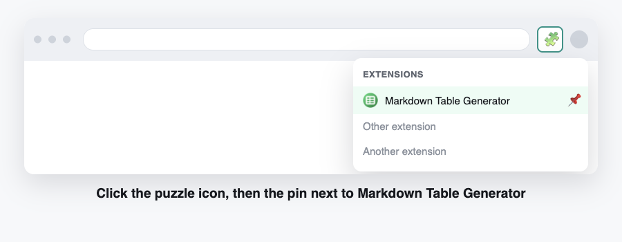
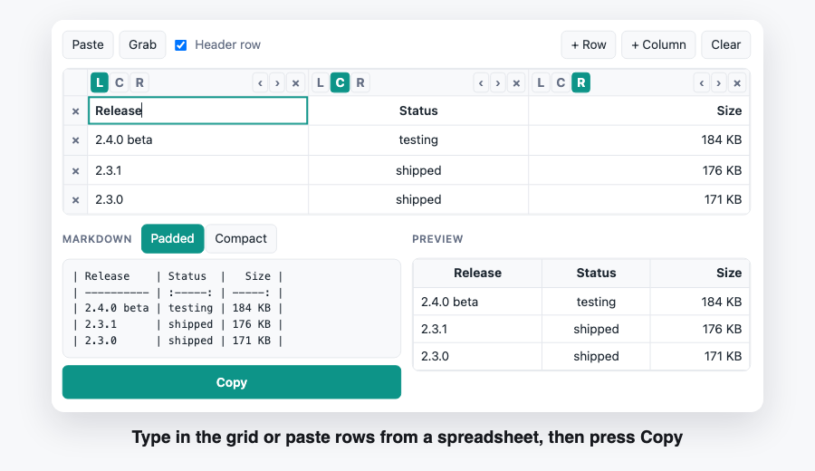

1 Pin it to the toolbar

Chrome hides new extensions behind the puzzle icon. Click the puzzle, then the pin, and the grid stays one click away.
2 Build your first table

Open the popup and type into the grid, or paste rows straight from Excel, Google Sheets, Notion or a CSV file. Pick the alignment for each column, press Copy, and paste the block into your README, issue or notes.
Nothing leaves your browser
Every table is built inside the tab. There is no account, no upload and no server that could see what you paste. The extension reads a web page only when you press Grab, and only that one time.
Already have a markdown table? Paste it back into the popup and the grid comes back, alignment included. Wide tables scroll, and the compact shape keeps diffs small.